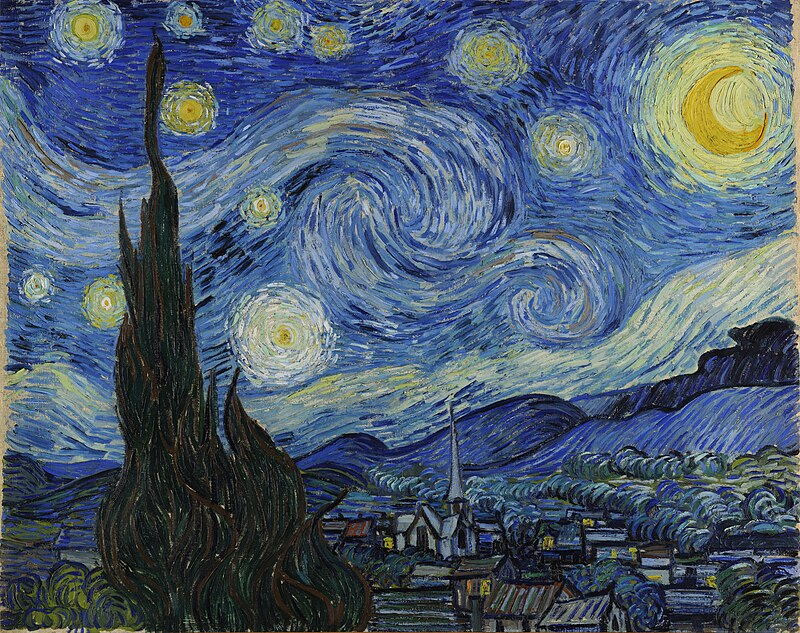

Koda redaktors
≪ Atpakaļ uz vietni
<!DOCTYPE html> <html> <body> <p>Šeit ir citāts no Delfi mājaslapas:</p> <blockquote cite="https://www.delfi.lv/campus/56036786/vide/56205036/nenomirt-bada-polaraja-ziema-ka-ziemelbriezi-atrod-kerpjus-sniega"> Ne visiem ziemeļbriežiem ir paveicies kā tiem, kas pavisam drīz vilks Ziemassvētku vecīša kamanas, lai izvadātu visiem pasaules bērniem dāvanas. Par saviem briežiem Ziemassvētku vecītis noteikti labi parūpējas, bet pārējiem nākas vien skarbajos apstākļos izdzīvot pašiem. Kā sniega laukos atrast galveno briežu pārtikas avotu – briežu ķērpi? Izrādās, te nāk palīgā unikālā ziemeļbriežu redze, kas būtiski atšķiras no cilvēku redzes.</blockquote> <br> <p>Pārlūkprogrammas parasti ievieto pēdiņas ap elementu q.</p> <p>Ziemeļbriežu mērķis ziemā ir: <q> nenomirt badā polārajā ziemā un atrast ķērpjus sniegā.</q></p> <br> <p><abbr title="Pasaules Dabas Fonds">PDF</abbr> tika dibināts 1961.gadā.</p> <p>Saīsinājumu marķēšana var sniegt noderīgu informāciju pārlūkprogrammām, tulkošanas sistēmām un meklētājprogrammām.</p> <br> <p>HTML adreses elements nosaka dokumenta vai raksta kontaktinformāciju (autoru/īpašnieku).</p> <address> Autors: Anna Bērziņa.<br> Apmeklējiet mūs:<br> vietne.lv<br> Liepu iela 24a, Rīga<br> Latvija </address><br> <p>HTML citēšanas elements nosaka darba nosaukumu.</p> <p>Pārlūkprogrammās citātu elementi parasti tiek rādīti slīprakstā.</p>  <p>Vinsents van Gogs <cite>Zvaigžņotā nakts</cite>. Gleznota 1889.gadā.</p><br> <p>Ja jūsu pārlūkprogramma atbalsta divvirzienu ignorēšanu (bdo), nākamā rinda tiks rakstīta no labās puses uz kreiso (rtl):</p> <bdo dir="rtl">Šī rinda tiks rakstīta no labās puses uz kreiso</bdo> </body> </html>
Palaist kodu
Koda izvade